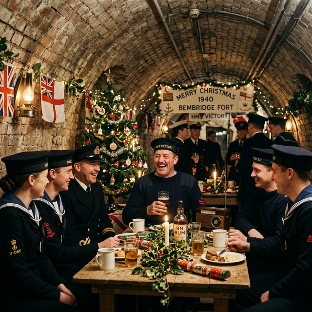
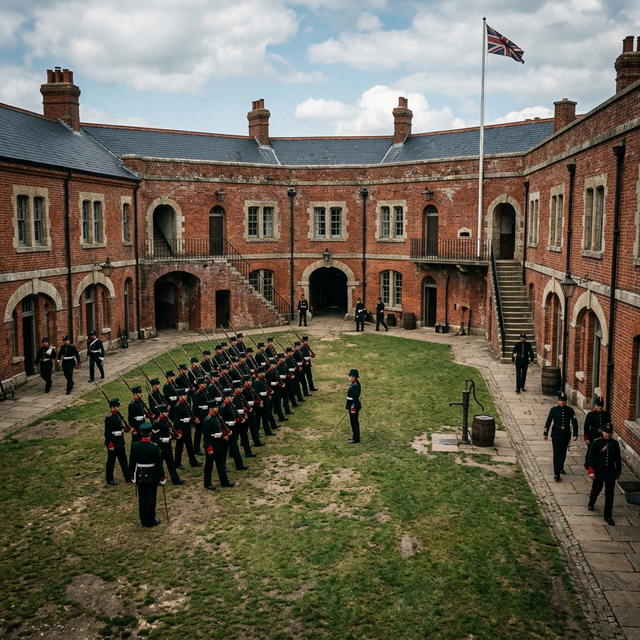

Life at The Fort
Geoffrey wrote of his time on the Isle of Wight in vivid detail. He described Bembridge Fort as
a "huge brick-built fort sunk into a deep dry moat on the summit of Bembridge Down."
From the ramparts, he could see the whole length of Spithead, with barrack rooms converted into
dormitories and galleys deep below.
"Behind these rooms a tunnel formed a circle of the fort so that each room had two
entrances... At intervals were steep cuttings for the storage of gunpowder. It really was
most impressive."
Commanded by a Harley Street dentist "cast in the role of Henry V," the operational
reality was run by CPO Bishop, a highly efficient engineer. Geoffrey fondly recalled the
self-important but likeable bosun, Leading Seaman Pickard, whose colourful vocabulary provided
much amusement among the 45 Royal Navy personnel stationed there at Christmas 1940.
Despite the absurdities of garrison life, Geoffrey's letters home carried an unmistakable warmth.
He admired the Island deeply — both its natural beauty and the camaraderie of the men and women
who served alongside him under the shadow of potential invasion.


Left: Christmas 1940 — 45 men and women keeping a watchful eye on the Solent. Right: The imposing Victorian brick walls Geoffrey called home.